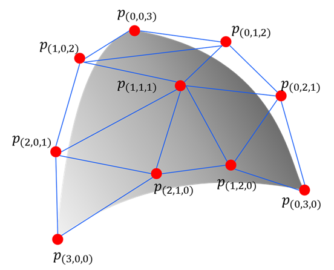
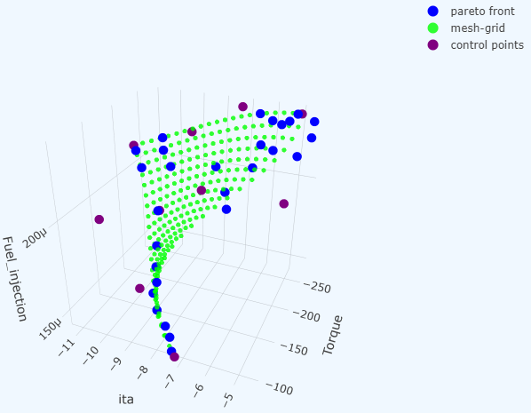

Welcome to PyTorch-BSF!
Fit smooth manifolds with explicit geometry and numerical evidence.
PyTorch-BSF brings Bézier Simploid Fitting (BSF) to PyTorch. A Bézier simplex is a high-dimensional generalization of the Bézier curve: it can model an arbitrarily complex point cloud as a smooth parametric hyper-surface in any number of dimensions (see Bézier simplex fitting). Bézier simploids go further: they are tensor products of Bézier simplices defined on products of simplices such as prisms and cubes, and simploidal sets glue such cells along common faces. This makes them a natural tool for representing Pareto fronts in multi-objective optimization, interpolating scattered observations, and fitting geometric structures in high-dimensional spaces.
The project is on GitHub.
Note
BSF formerly stood for Bézier Simplex Fitting, which remains the special case where the parameter domain is a single simplex.




Practical guides include reproducible comparisons, parameter tuning and interpretation of numerical evidence for the unified API.
Start with installation and the quickstart to run your first fit, then read the geometric introduction for the underlying concepts. Continue with the practical guides for your workflow, and consult the reference when you need exact arguments or migration details.
Getting started
User guide
- Command-line reference
- Advanced Topics
- Applications
- Frequently asked questions
- Do I need Conda, Lightning or MLflow?
- How do I predict?
- Does solver success imply identifiable coefficients?
- How do I choose a degree?
- Where did the old APIs go?
- What are the objects I need for an ordinary fit?
- Why does a one-column input produce a constant model?
- How do I choose between simplex, product and assembled spaces?
- Why can a successful model still be poor?
- What should I adjust when the fit oscillates?
- When should I normalize outputs?
- Are control points predicted values on a grid?
- How can I preserve a known endpoint exactly?
- Will splitting reduce my prediction error?
- Does active learning guarantee better accuracy each round?
- Should I switch to the sparse solver or a GPU?
- Why does optimization report failure after using every iteration?
- What happens after a numerical solve fails?
- How should I save a model and reproduce its figures?
- Can I compare before/after runs with different evaluation points?